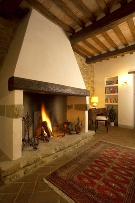

Conoe – Consorzio nazionale di raccolta e trattamento degli oli e dei grassi vegetali ed animali esausti
 CHI SIAMO Oggetto e finalità CdA NORME Normativa Vigente Circolari CONTRIBUTO AMBIENTALE AZIENDE Aziende per regione Aziende di raccolta e di rigenerazione ASSOCIAZIONI ADESIONE CONTATTI FAQ Cerca Menu Menu Facebook Twitter
CHI SIAMO Oggetto e finalità CdA NORME Normativa Vigente Circolari CONTRIBUTO AMBIENTALE AZIENDE Aziende per regione Aziende di raccolta e di rigenerazione ASSOCIAZIONI ADESIONE CONTATTI FAQ Cerca Menu Menu Facebook Twitter
Il CONOE è il Consorzio istituito, con la funzione di organizzare, controllare e di monitorare la filiera degli oli e dei grassi vegetali ed animali esausti a fini ambientali, a tutela della salute pubblica e, allo scopo di ridurre la dispersione del rifiuto trasformando un costo ambientale ed economico in una risorsa rinnovabile.
1 2 3 4 5 6 7 8 9 10 11 12 13ECOMONDO 2019 : da dx: On. Sergio Costa, Ministro dell’Ambiente e della Tutela del Territorio e del Mare, dott. Tommaso Campanile, Presidente Conoe
ORARI DI APERTURA:
Sede legale (Roma) e Sede operativa (Milano)
LUN-GIO: 9:00 – 13:00 14:00 – 18:00
VEN: 9:00 – 13:00 14:00 – 17:00
SEGUICI SU:
Link interessanti
Qui ci sono alcuni link interessanti per voi! Godetevi la permanenza :) Scorrere verso l’alto